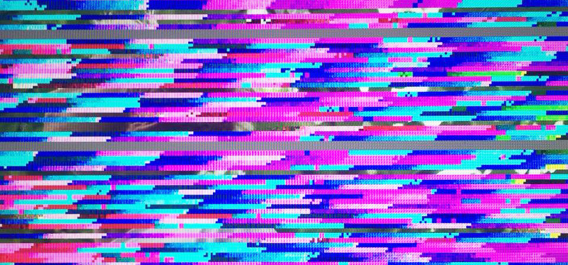

Sandra Olsson
Lover of strong colors and everything out of the ordinary.
Education:
Degree of Bachelor of Arts with a major in Graphic Design - Malmö university
Exchange studies, Fachhoschule Potsdam, Germany
3D-Modeling and Animation in Open Source Environments - University of Gävle
Currently learning programming. Mainly web development.
In search of work.
Don't hesitate to contact me!
email: sandra.helene.olsson@gmail.com